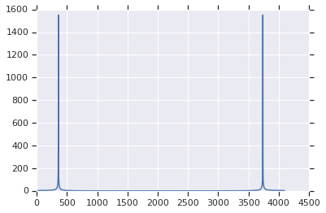

Digital Signal Processing
DFT/FFT
DFT is a matrix multiplication, the naive implementation is . FFT is a much faster multiplication in , which makes it practical.
- Wikipedia
- Wikibooks
- DFT matrix
- Smith's Guide to DSP, ch.8 by Steven W. Smith
- Mathematics of the Discrete Fourier Transform by Julius O. Smith
- The Discrete Fourier Transform by Ivan W. Selenick and Gerald Schuller. From chapter 2 of The Transform and Data Compression Handbook ed. by Kamisetty Ramam Rao and Patrick C. Yip
- The Discrete Fourier Transform by prof. Jeffrey A. Fessler from EECS 451, Digital Signal Processing and Analysis
- The Discrete Fourier Transform by prof. Stephen Roberts from Signal Processing & Filter Design
Digital Sinusoid Generators
- DTMF Tone Generation and Detection by Gunter Schmer
Second-order digital resonator in Python:
fs = 8000 # sampling frequency
fo = 700 # output frequency
A = 1.0 # amplitude
w = 2*pi*fo/fs # angular frequency of fo
c = 2.0 * cos(w) # coefficient, controls the frequency, 1.70528
x = -A * sin(w) # initial value, controls the amplitude and phase, -0.522498
y = 0.0
for ever:
emit(x)
x, y = c*x - y, x
First 100 data points:

N = 4096
f = fft(signal[:N])
p = np.argmax(abs(f)[:N//2])
print(p*fs/N) => 699.21895 Hz
FFT: 
- Digital Waveguide Oscillator by Julius O. Smith
- Effect Design Part 3 Oscillators: Sinusoidal and Pseudonoise by Jon Dattorro
- A sine generation algorithm for VLSI applications by John W. Gordon and Julius O. Smith
- The Second-Order Digital Waveguide Oscillator by Julius O. Smith and Perry R. Cook
- AN-263 Sine Wave Generation Techniques
- 5 ways to generate a sine wave